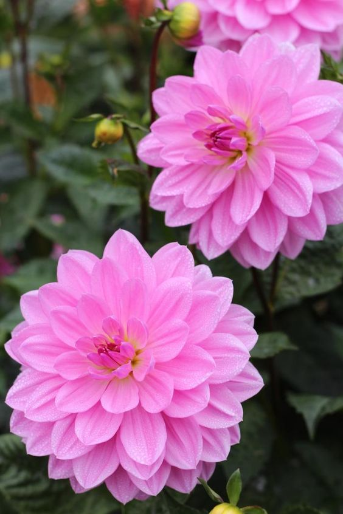

La Dalia, también conocida como Dahlia, es una flor muy popular que está rodeada de numerosos pétalos de diversos colores. Le pusieron este nombre en honor a Andreas Dahi. Suele crecer con abundantes hojas, sus raíces son fuertes y su tallo flexible. Sin duda, lo mejor que tiene esta flor es el momento de su florecimiento, pues es considerada como un espectacular bouquet, es decir, un ramo de flores. Esta planta representa el impulso y la pasión.
Volver a la página principal